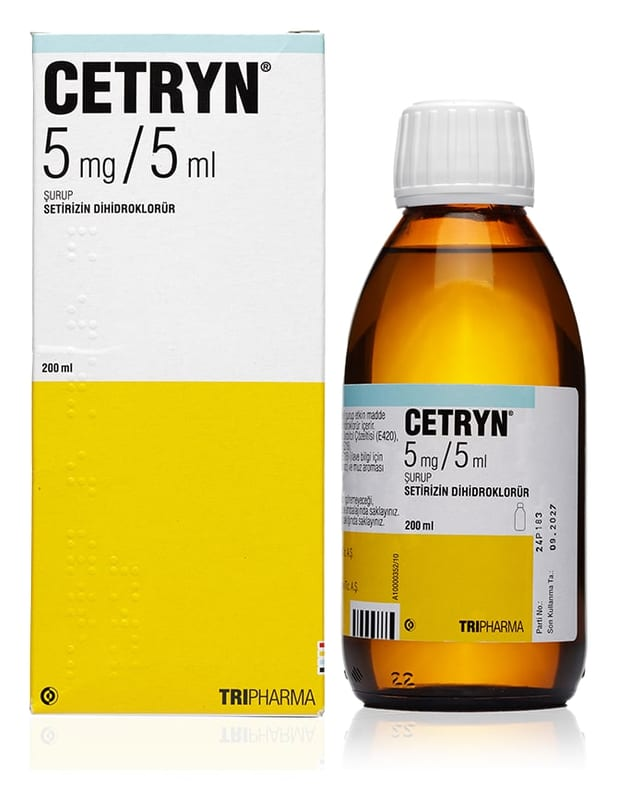

Cetryn 5 mg/5 ml Şurup, 100 ml

Ne için kullanılır
KT · Bölüm 1CETRYN, muz aromalı berrak çözeltidir. CETRYN, PE plastik burgulu kapaklı 100 ve 200 mL’lik renkli cam şişede 5 mL’lik ölçekle beraber sunulur.
CETRYN alerjik nezle ve kurdeşen tedavisinde kullanılan bir ilaçtır. CETRYN; Erişkinler ile 2 yaş ve üzeri çocuklarda;
- Alerjik nezlenin burun ve göz ile ilgili belirtilerinin tedavisinde ve ürtikerin (kurdeşen) tedavisinde kullanılır.